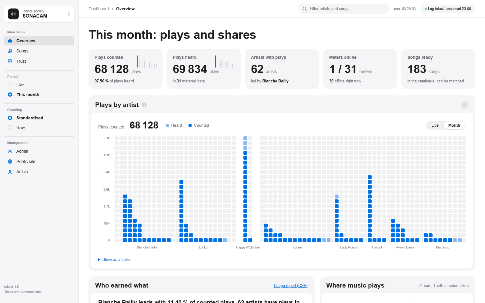

Usage data
Every bar, every song
A sealed meter in each licensed bar reports which songs play, hour by hour. Bars pay nothing extra.
See the live countFair Play
SONACAM already collects a levy from every bar.
Fair Play shows which songs those bars really play,
so the money goes to the artists who earned it.

Usage data
A sealed meter in each licensed bar reports which songs play, hour by hour. Bars pay nothing extra.
See the live countFair shares
Each artist's share comes from counted plays, not from a flat split or a guess.
See the differenceTrust
Every play is chained to the one before it and anchored every hour.
See the play logReview
A song on repeat, an empty room at 4 am or a moved meter is flagged for SONACAM to review.
See this month's flagsArtists
Every artist can see where their songs were played and their share.
Find an artistEvery number on this page is computed by Fair Play from the meters' plays.
Flat split vs Fair Play
–less of the pot paid to the wrong artists than a flat equal split
Share of the pot paid to the wrong artists in the mock month, against what really played.
Across Cameroon
The catalogue
Live from the bars
Each play is sealed to the one before it and published every hour. Change one past play and the chain breaks, the dashboard turns red and the results are withheld.

Music plays in the bar as it always does.
Short fingerprints are matched against the song catalogue. The sound is thrown away.

Repeats of the same song in a short time count less, so looping a song does not inflate it. Anything unusual is flagged for review.

SONACAM gets each artist's share and a usage report per song, and pays its members under its own rules.
A small sealed meter in each licensed bar (a microphone, a low-cost chip and a 4G modem) and the Fair Play server, which SONACAM runs. The meter needs no Wi-Fi and nothing from the bar except a power socket.
Each artist's share of the month's plays, the detail per song and per bar, and a usage report file per song that SONACAM can use in its own distribution.
A song's share is its counted plays divided by all counted plays in the period. An artist's share is the sum of their songs' shares. Repeats of the same song in a short time count less.
Repeats count less, so a song on loop gains little. A song on repeat, a song played to an empty room and a meter that moves are flagged for SONACAM to review. Each meter seals its reports with its own key, so they cannot be faked or changed on the way.
Every play is chained to the one before it, and each hour's chain is published. A changed play breaks the chain, the dashboard turns red and the results are withheld until the log is restored.
No. The meter turns short slices of sound into fingerprints of the music's strongest peaks and throws the sound away. Speech is not kept, and no audio is sent.
No. The levy is already in the price of the drinks a bar buys. Fair Play only changes how SONACAM shares that money between artists.
Songs in SONACAM's catalogue. When an artist or label declares a song, its fingerprint is added and bars playing it are counted from then on.